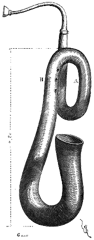

Eugène VIOLLET le DUC
Dictionnaire raisonné du mobilier.|
 Figure 1 |
SERPENT, s. m. Trompe façonnée en cuir bouilli, avec embouchure d'ivoire et pipe de métal, donnant la basse des flûtes de diverses tailles, et notamment des flûtes bruyantes, qui tenaient lieu de nos grandes clarinettes. On voit le serpent figuré sur des vignettes de manuscrits du XVe siècle. M. Fau possède dans sa belle collection un serpent d'une conservation parfaite, et qui appartient aux dernières années du XVe siècle (fig. 1). La main gauche de l'exécutant tenait l'instrument à sa première révolution, en A ; la droite agissait sur les trois trous percés en B. La longueur développée du tube, y compris la pipe, est de 2m,50. Les sons obtenus par cet instrument sont pleins et d'une grande puissance. La fabrication en est remarquablement belle. On employait encore le serpent, il y a une trentaine d'années, pour accompagner le plain-chant dans les églises ; mais au XVe siècle, et même beaucoup plus tard, cet instrument avait sa place dans les concerts. Nous l'avons encore vu adopté dans les musiques des régiments. |